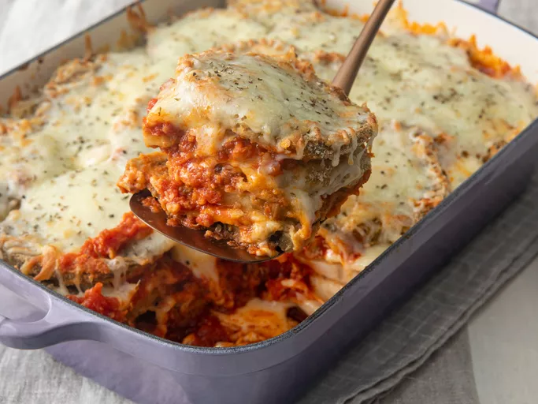

Eggplant Parmesan

Description
Eggplant Parmesan is a masterpiece of Italian comfort food, layering tender, golden-fried slices of eggplant with rich marinara sauce, gooey mozzarella, and nutty Parmesan cheese. Baked to perfection, the dish emerges bubbling and golden, its aroma a tantalizing blend of garlic, basil, and melted cheese that promises indulgent satisfaction.
Each forkful is a symphony of textures—the crisp coating of the eggplant, the creamy melted cheese, and the luscious, tangy tomato sauce. The flavors intertwine beautifully, delivering a hearty yet elegant experience. Topped with a sprinkle of fresh herbs, Eggplant Parmesan is a dish that warms the soul with every bite.
Ingredients
- 3 large eggplant, peeled and thinly sliced
- 2 large eggs, beaten
- 4 cups Italian seasoned bread crumbs
- 6 cups spaghetti sauce, divided
- 1 (16 ounce) package mozzarella cheese, shredded and divided
- ½ cup grated Parmesan cheese, divided
- ½ teaspoon dried basil
Steps
- Preheat the oven to 350 degrees F (175 degrees C).
- Dip eggplant slices in beaten egg, then in bread crumbs to coat. Place in a single layer on a baking sheet.
- Bake in the preheated oven for 5 minutes. Flip and bake for 5 more minutes.
- Spread spaghetti sauce to cover the bottom of a 9x13-inch baking dish. Place a layer of eggplant slices in the sauce. Sprinkle with mozzarella and Parmesan cheeses.
- Repeat layers with remaining sauce, eggplant, and cheese, ending with a cheese layer. Sprinkle basil on top.
- Bake in the preheated oven until golden brown, about 35 minutes.
- Serve hot and enjoy!
Che buon profumo!
Home